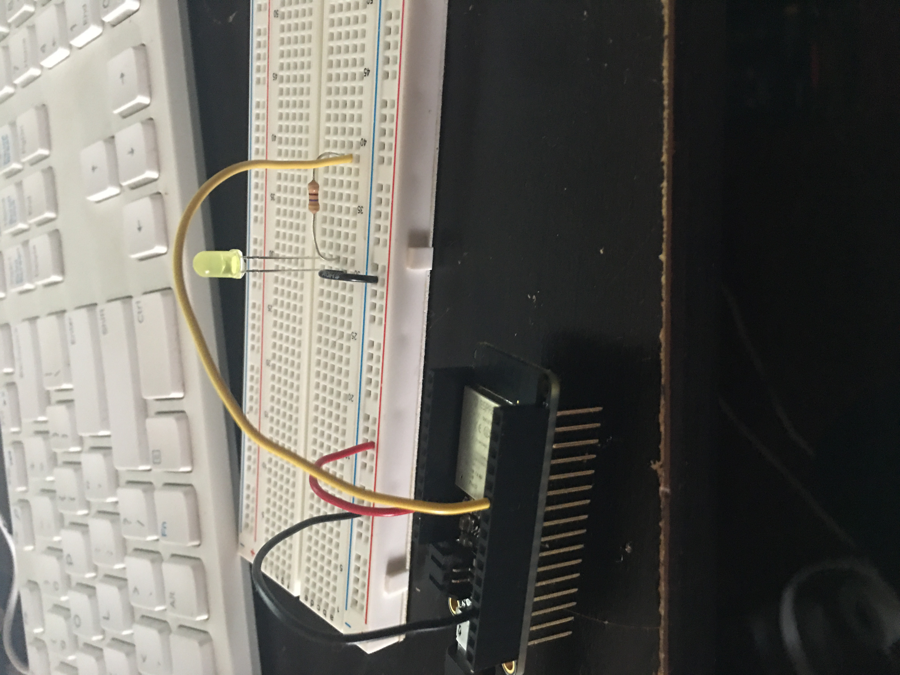

Week 9: Networking/IoT
FEATHER-LED SWITCH
In week 9, our class explored the world of networking and communication. We learned how to apply wireless networking in our microcontroller boards and circuits, and our assignment was to control using the information obtained this week. For my assignment, I made a simple LED switch that used Firebase to control whether an LED turns on or off. In preparation for our upcoming final projects, I intented to keep my work simple. I followed the instruction for HUZZAH tutorial 1b, which demonstrates how to use the wbesite called Firebase to control our board. I started off by making a basic led circuit on my breadboard, with a yellow LED, a 470 ohm resistor and the esp32 feather board.
Next, I logged into firebase with my google account, and created a project for my assignment. Initally, I thought this whole task was going to be overly complicated, as I had no clue on how networking even works. To my surprise, the tutorial was extremely simple. I edited the rules in the realtime database, wrote down the huzzah's secret key & database URL, and applied to the example code provided. When I tried to get the circuit to work, nothing happened. I had an error that tld me the Firebase ESP32 library was not detected, so I had to install it and the rest is history; I was able to turn the LED on and off by typing "on" and "off" in the realtime database console. I checked the serial monitor for my board, and was able to know when teh LED was on or off. A step in the right direction, but there wwas still work to be done.


Adding a Web Interface
To intemplate a better UI, I copied the second example code and create a new index.html under my week 9 folder in sublime text. i went back to firebase, clicked the web icon, and named the app used for the assignment. This process adds firebase to the application being used. To finish it all off, I edited the firebaseConfig with the codes given to me after naming the app. The link to control the LED and the board was made, and added to my repository on GitHub.
LED SWITCH LINK
And here is the networking link I used: link
A video of the end result: